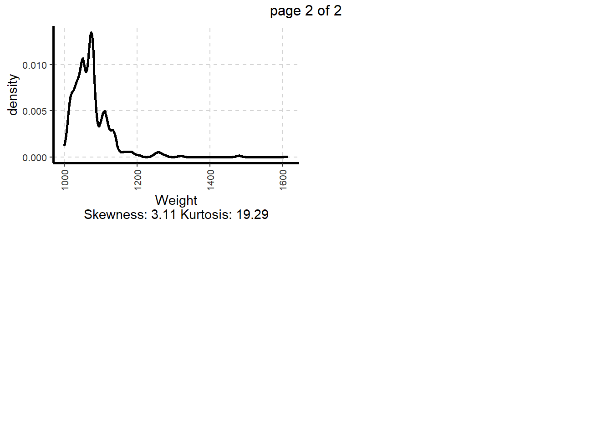
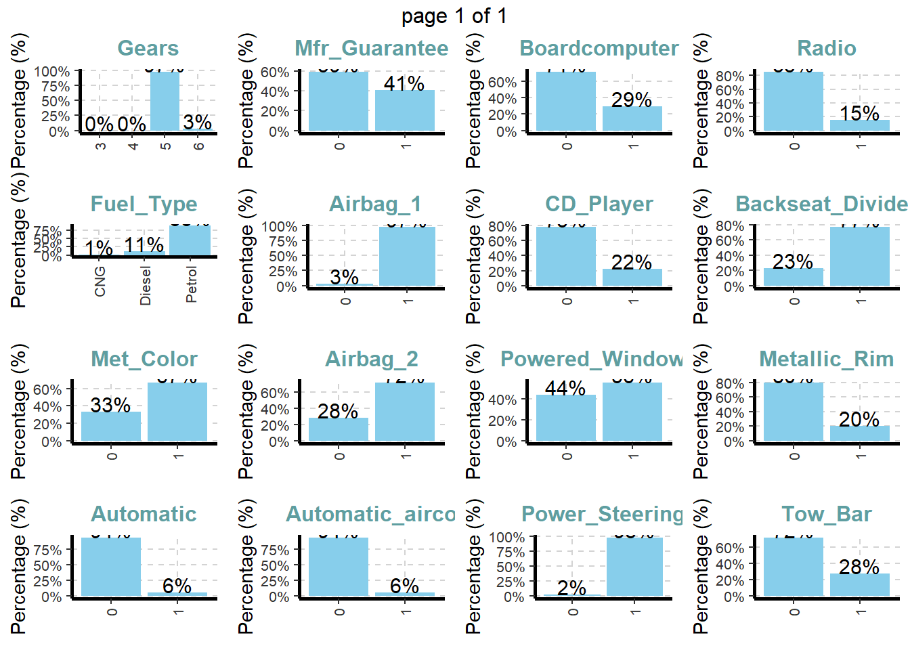
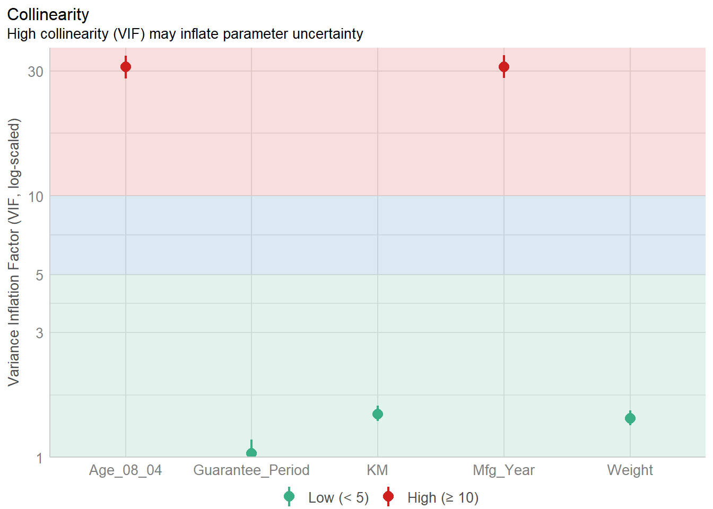

pacman::p_load(tidyverse, readxl, SmartEDA, easystats, gtsummary, ggstatsplot)In-Class Exercise 5a (Visual Analytics for Building Better Explanatory Models)
Getting Started
Note
Remember to clear cache and install packages that are new so that they can be updated. If the cache is not cleared, installing the newer version will not automatically overwrite the old Also, run this chunk of data first so that the libraries of the most updated version will be used.
Importing data
car_resale <- read_xls("ToyotaCorolla.xls", "data")glimpse(car_resale)Rows: 1,436
Columns: 38
$ Id <dbl> 81, 1, 2, 3, 4, 5, 6, 7, 8, 44, 45, 46, 47, 49, 51, 6…
$ Model <chr> "TOYOTA Corolla 1.6 5drs 1 4/5-Doors", "TOYOTA Coroll…
$ Price <dbl> 18950, 13500, 13750, 13950, 14950, 13750, 12950, 1690…
$ Age_08_04 <dbl> 25, 23, 23, 24, 26, 30, 32, 27, 30, 27, 22, 23, 27, 2…
$ Mfg_Month <dbl> 8, 10, 10, 9, 7, 3, 1, 6, 3, 6, 11, 10, 6, 11, 11, 11…
$ Mfg_Year <dbl> 2002, 2002, 2002, 2002, 2002, 2002, 2002, 2002, 2002,…
$ KM <dbl> 20019, 46986, 72937, 41711, 48000, 38500, 61000, 9461…
$ Quarterly_Tax <dbl> 100, 210, 210, 210, 210, 210, 210, 210, 210, 234, 234…
$ Weight <dbl> 1180, 1165, 1165, 1165, 1165, 1170, 1170, 1245, 1245,…
$ Guarantee_Period <dbl> 3, 3, 3, 3, 3, 3, 3, 3, 3, 3, 3, 3, 3, 3, 3, 3, 3, 3,…
$ HP_Bin <chr> "100-120", "< 100", "< 100", "< 100", "< 100", "< 100…
$ CC_bin <chr> "1600", ">1600", ">1600", ">1600", ">1600", ">1600", …
$ Doors <dbl> 5, 3, 3, 3, 3, 3, 3, 3, 3, 5, 5, 5, 5, 5, 5, 5, 3, 3,…
$ Gears <dbl> 5, 5, 5, 5, 5, 5, 5, 5, 5, 5, 5, 5, 5, 5, 5, 5, 5, 5,…
$ Cylinders <dbl> 4, 4, 4, 4, 4, 4, 4, 4, 4, 4, 4, 4, 4, 4, 4, 4, 4, 4,…
$ Fuel_Type <chr> "Petrol", "Diesel", "Diesel", "Diesel", "Diesel", "Di…
$ Color <chr> "Blue", "Blue", "Silver", "Blue", "Black", "Black", "…
$ Met_Color <dbl> 1, 1, 1, 1, 0, 0, 0, 1, 1, 0, 0, 0, 1, 1, 1, 1, 1, 1,…
$ Automatic <dbl> 1, 0, 0, 0, 0, 0, 0, 0, 0, 0, 0, 0, 0, 0, 0, 0, 0, 0,…
$ Mfr_Guarantee <dbl> 0, 0, 0, 1, 1, 1, 0, 0, 1, 1, 1, 0, 0, 1, 1, 1, 0, 1,…
$ BOVAG_Guarantee <dbl> 0, 1, 1, 1, 1, 1, 1, 1, 1, 1, 1, 1, 1, 1, 1, 1, 1, 1,…
$ ABS <dbl> 1, 1, 1, 1, 1, 1, 1, 1, 1, 1, 1, 1, 1, 1, 1, 1, 1, 1,…
$ Airbag_1 <dbl> 1, 1, 1, 1, 1, 1, 1, 1, 1, 1, 1, 1, 1, 1, 1, 1, 1, 1,…
$ Airbag_2 <dbl> 1, 1, 1, 1, 1, 1, 1, 1, 1, 1, 1, 1, 1, 1, 1, 1, 1, 1,…
$ Airco <dbl> 1, 0, 1, 0, 0, 1, 1, 1, 1, 1, 1, 1, 1, 1, 1, 1, 1, 1,…
$ Automatic_airco <dbl> 1, 0, 0, 0, 0, 0, 0, 0, 0, 0, 0, 1, 0, 0, 0, 1, 0, 1,…
$ Boardcomputer <dbl> 0, 1, 1, 1, 1, 1, 1, 1, 1, 1, 1, 1, 1, 1, 1, 1, 1, 1,…
$ CD_Player <dbl> 1, 0, 1, 0, 0, 0, 0, 0, 1, 0, 0, 0, 1, 0, 1, 1, 1, 1,…
$ Central_Lock <dbl> 1, 1, 1, 0, 0, 1, 1, 1, 1, 1, 1, 1, 1, 1, 1, 1, 1, 1,…
$ Powered_Windows <dbl> 1, 1, 0, 0, 0, 1, 1, 1, 1, 1, 1, 1, 1, 1, 1, 1, 1, 1,…
$ Power_Steering <dbl> 1, 1, 1, 1, 1, 1, 1, 1, 1, 1, 1, 1, 1, 1, 1, 1, 1, 1,…
$ Radio <dbl> 0, 0, 0, 0, 0, 0, 0, 0, 0, 0, 0, 0, 0, 0, 0, 0, 0, 0,…
$ Mistlamps <dbl> 0, 0, 0, 0, 0, 1, 1, 0, 0, 0, 0, 0, 0, 0, 0, 0, 0, 0,…
$ Sport_Model <dbl> 0, 0, 0, 0, 0, 0, 0, 1, 0, 1, 1, 0, 1, 1, 1, 1, 1, 1,…
$ Backseat_Divider <dbl> 0, 1, 1, 1, 1, 1, 1, 1, 1, 1, 1, 1, 1, 1, 1, 1, 1, 1,…
$ Metallic_Rim <dbl> 0, 0, 0, 0, 0, 0, 0, 0, 0, 0, 0, 0, 0, 0, 0, 0, 0, 0,…
$ Radio_cassette <dbl> 0, 0, 0, 0, 0, 0, 0, 0, 0, 0, 0, 0, 0, 0, 0, 0, 0, 0,…
$ Tow_Bar <dbl> 0, 0, 0, 0, 0, 0, 0, 0, 0, 0, 0, 0, 0, 0, 0, 0, 0, 0,…summary(car_resale) Id Model Price Age_08_04
Min. : 1.0 Length:1436 Min. : 4350 Min. : 1.00
1st Qu.: 361.8 Class :character 1st Qu.: 8450 1st Qu.:44.00
Median : 721.5 Mode :character Median : 9900 Median :61.00
Mean : 721.6 Mean :10731 Mean :55.95
3rd Qu.:1081.2 3rd Qu.:11950 3rd Qu.:70.00
Max. :1442.0 Max. :32500 Max. :80.00
Mfg_Month Mfg_Year KM Quarterly_Tax
Min. : 1.000 Min. :1998 Min. : 1 Min. : 19.00
1st Qu.: 3.000 1st Qu.:1998 1st Qu.: 43000 1st Qu.: 69.00
Median : 5.000 Median :1999 Median : 63390 Median : 85.00
Mean : 5.549 Mean :2000 Mean : 68533 Mean : 87.12
3rd Qu.: 8.000 3rd Qu.:2001 3rd Qu.: 87021 3rd Qu.: 85.00
Max. :12.000 Max. :2004 Max. :243000 Max. :283.00
Weight Guarantee_Period HP_Bin CC_bin
Min. :1000 Min. : 3.000 Length:1436 Length:1436
1st Qu.:1040 1st Qu.: 3.000 Class :character Class :character
Median :1070 Median : 3.000 Mode :character Mode :character
Mean :1072 Mean : 3.815
3rd Qu.:1085 3rd Qu.: 3.000
Max. :1615 Max. :36.000
Doors Gears Cylinders Fuel_Type
Min. :2.000 Min. :3.000 Min. :4 Length:1436
1st Qu.:3.000 1st Qu.:5.000 1st Qu.:4 Class :character
Median :4.000 Median :5.000 Median :4 Mode :character
Mean :4.033 Mean :5.026 Mean :4
3rd Qu.:5.000 3rd Qu.:5.000 3rd Qu.:4
Max. :5.000 Max. :6.000 Max. :4
Color Met_Color Automatic Mfr_Guarantee
Length:1436 Min. :0.0000 Min. :0.00000 Min. :0.0000
Class :character 1st Qu.:0.0000 1st Qu.:0.00000 1st Qu.:0.0000
Mode :character Median :1.0000 Median :0.00000 Median :0.0000
Mean :0.6748 Mean :0.05571 Mean :0.4095
3rd Qu.:1.0000 3rd Qu.:0.00000 3rd Qu.:1.0000
Max. :1.0000 Max. :1.00000 Max. :1.0000
BOVAG_Guarantee ABS Airbag_1 Airbag_2
Min. :0.0000 Min. :0.0000 Min. :0.0000 Min. :0.0000
1st Qu.:1.0000 1st Qu.:1.0000 1st Qu.:1.0000 1st Qu.:0.0000
Median :1.0000 Median :1.0000 Median :1.0000 Median :1.0000
Mean :0.8955 Mean :0.8134 Mean :0.9708 Mean :0.7228
3rd Qu.:1.0000 3rd Qu.:1.0000 3rd Qu.:1.0000 3rd Qu.:1.0000
Max. :1.0000 Max. :1.0000 Max. :1.0000 Max. :1.0000
Airco Automatic_airco Boardcomputer CD_Player
Min. :0.0000 Min. :0.00000 Min. :0.0000 Min. :0.0000
1st Qu.:0.0000 1st Qu.:0.00000 1st Qu.:0.0000 1st Qu.:0.0000
Median :1.0000 Median :0.00000 Median :0.0000 Median :0.0000
Mean :0.5084 Mean :0.05641 Mean :0.2946 Mean :0.2187
3rd Qu.:1.0000 3rd Qu.:0.00000 3rd Qu.:1.0000 3rd Qu.:0.0000
Max. :1.0000 Max. :1.00000 Max. :1.0000 Max. :1.0000
Central_Lock Powered_Windows Power_Steering Radio
Min. :0.0000 Min. :0.000 Min. :0.0000 Min. :0.0000
1st Qu.:0.0000 1st Qu.:0.000 1st Qu.:1.0000 1st Qu.:0.0000
Median :1.0000 Median :1.000 Median :1.0000 Median :0.0000
Mean :0.5801 Mean :0.562 Mean :0.9777 Mean :0.1462
3rd Qu.:1.0000 3rd Qu.:1.000 3rd Qu.:1.0000 3rd Qu.:0.0000
Max. :1.0000 Max. :1.000 Max. :1.0000 Max. :1.0000
Mistlamps Sport_Model Backseat_Divider Metallic_Rim
Min. :0.000 Min. :0.0000 Min. :0.0000 Min. :0.0000
1st Qu.:0.000 1st Qu.:0.0000 1st Qu.:1.0000 1st Qu.:0.0000
Median :0.000 Median :0.0000 Median :1.0000 Median :0.0000
Mean :0.257 Mean :0.3001 Mean :0.7702 Mean :0.2047
3rd Qu.:1.000 3rd Qu.:1.0000 3rd Qu.:1.0000 3rd Qu.:0.0000
Max. :1.000 Max. :1.0000 Max. :1.0000 Max. :1.0000
Radio_cassette Tow_Bar
Min. :0.0000 Min. :0.0000
1st Qu.:0.0000 1st Qu.:0.0000
Median :0.0000 Median :0.0000
Mean :0.1455 Mean :0.2779
3rd Qu.:0.0000 3rd Qu.:1.0000
Max. :1.0000 Max. :1.0000 list(car_resale)[[1]]
# A tibble: 1,436 × 38
Id Model Price Age_08_04 Mfg_Month Mfg_Year KM Quarterly_Tax Weight
<dbl> <chr> <dbl> <dbl> <dbl> <dbl> <dbl> <dbl> <dbl>
1 81 TOYOTA … 18950 25 8 2002 20019 100 1180
2 1 TOYOTA … 13500 23 10 2002 46986 210 1165
3 2 TOYOTA … 13750 23 10 2002 72937 210 1165
4 3 TOYOTA… 13950 24 9 2002 41711 210 1165
5 4 TOYOTA … 14950 26 7 2002 48000 210 1165
6 5 TOYOTA … 13750 30 3 2002 38500 210 1170
7 6 TOYOTA … 12950 32 1 2002 61000 210 1170
8 7 TOYOTA… 16900 27 6 2002 94612 210 1245
9 8 TOYOTA … 18600 30 3 2002 75889 210 1245
10 44 TOYOTA … 16950 27 6 2002 110404 234 1255
# ℹ 1,426 more rows
# ℹ 29 more variables: Guarantee_Period <dbl>, HP_Bin <chr>, CC_bin <chr>,
# Doors <dbl>, Gears <dbl>, Cylinders <dbl>, Fuel_Type <chr>, Color <chr>,
# Met_Color <dbl>, Automatic <dbl>, Mfr_Guarantee <dbl>,
# BOVAG_Guarantee <dbl>, ABS <dbl>, Airbag_1 <dbl>, Airbag_2 <dbl>,
# Airco <dbl>, Automatic_airco <dbl>, Boardcomputer <dbl>, CD_Player <dbl>,
# Central_Lock <dbl>, Powered_Windows <dbl>, Power_Steering <dbl>, …Data Overview
car_resale %>%
ExpData(type=1) Descriptions Value
1 Sample size (nrow) 1436
2 No. of variables (ncol) 38
3 No. of numeric/interger variables 33
4 No. of factor variables 0
5 No. of text variables 5
6 No. of logical variables 0
7 No. of identifier variables 1
8 No. of date variables 0
9 No. of zero variance variables (uniform) 1
10 %. of variables having complete cases 100% (38)
11 %. of variables having >0% and <50% missing cases 0% (0)
12 %. of variables having >=50% and <90% missing cases 0% (0)
13 %. of variables having >=90% missing cases 0% (0)summary_car_resale <- car_resale %>%
ExpData(type=1)There are no missing data, therefore “% of variables having complete cases” is 100% and the next 3 lines are all zeroes. If there is missing data, these lines will display further details.
Note
Saving the data table into variable summary_car_resale.
car_resale %>%
ExpData(type=2) Index Variable_Name Variable_Type Sample_n Missing_Count Per_of_Missing
1 1 Id numeric 1436 0 0
2 2 Model character 1436 0 0
3 3 Price numeric 1436 0 0
4 4 Age_08_04 numeric 1436 0 0
5 5 Mfg_Month numeric 1436 0 0
6 6 Mfg_Year numeric 1436 0 0
7 7 KM numeric 1436 0 0
8 8 Quarterly_Tax numeric 1436 0 0
9 9 Weight numeric 1436 0 0
10 10 Guarantee_Period numeric 1436 0 0
11 11 HP_Bin character 1436 0 0
12 12 CC_bin character 1436 0 0
13 13 Doors numeric 1436 0 0
14 14 Gears numeric 1436 0 0
15 15 Cylinders numeric 1436 0 0
16 16 Fuel_Type character 1436 0 0
17 17 Color character 1436 0 0
18 18 Met_Color numeric 1436 0 0
19 19 Automatic numeric 1436 0 0
20 20 Mfr_Guarantee numeric 1436 0 0
21 21 BOVAG_Guarantee numeric 1436 0 0
22 22 ABS numeric 1436 0 0
23 23 Airbag_1 numeric 1436 0 0
24 24 Airbag_2 numeric 1436 0 0
25 25 Airco numeric 1436 0 0
26 26 Automatic_airco numeric 1436 0 0
27 27 Boardcomputer numeric 1436 0 0
28 28 CD_Player numeric 1436 0 0
29 29 Central_Lock numeric 1436 0 0
30 30 Powered_Windows numeric 1436 0 0
31 31 Power_Steering numeric 1436 0 0
32 32 Radio numeric 1436 0 0
33 33 Mistlamps numeric 1436 0 0
34 34 Sport_Model numeric 1436 0 0
35 35 Backseat_Divider numeric 1436 0 0
36 36 Metallic_Rim numeric 1436 0 0
37 37 Radio_cassette numeric 1436 0 0
38 38 Tow_Bar numeric 1436 0 0
No_of_distinct_values
1 1436
2 372
3 236
4 77
5 12
6 7
7 1263
8 13
9 59
10 9
11 3
12 3
13 4
14 4
15 1
16 3
17 10
18 2
19 2
20 2
21 2
22 2
23 2
24 2
25 2
26 2
27 2
28 2
29 2
30 2
31 2
32 2
33 2
34 2
35 2
36 2
37 2
38 2Making variables into vectors
cols <- c("Mfg_Month", "HP_Bin", "CC_bin", "Doors", "Gears", "Cylinders", "Fuel_Type", "Color", "Met_Color", "Automatic", "Mfr_Guarantee", "BOVAG_Guarantee", "ABS", "Airbag_1", "Airbag_2", "Airco", "Automatic_airco", "Boardcomputer", "CD_Player", "Central_Lock", "Powered_Windows", "Power_Steering", "Radio", "Mistlamps", "Sport_Model", "Backseat_Divider", "Metallic_Rim", "Radio_cassette", "Tow_Bar")
car_resale <- read_xls("ToyotaCorolla.xls", sheet="data") %>%
mutate(Id = as.character(Id)) %>%
mutate_each_(funs(factor(.)),cols)mutate() function allows us to do data transformation. The first line converts ID into character, while the second line is a function that converts all in cols into factors. Use dpylr and tidyr packages for useful data transformations.
ExpNumViz
car_resale %>%
ExpNumViz(target=NULL,
nlim=10,
Page=c(2,2))$`0`
car_resale %>%
ExpNumViz(target="Price",
nlim=10,
Page=c(2,2))$`0`ExpNumViz will provide a report of 4 graphs. It is actually using ggplot2 and providing probability density plots of all the 5 categorical data, rather than using ggplot2 to manually plot the graphs and combining them using patchwork. The page is 2 by 2, giving 4 plots on the first page and 1 plot on the second page. nlim sets the maximum unique values for numeric variable.
# Bar plots for all categorical variables
#| fig-width: 12
#| fig-height: 10
car_resale %>%
ExpCatViz(target=NULL,
col="sky blue",
clim=10,
margin=2,
Page=c(4,4),
sample=16)$`0`
They are plotted as bar charts and not histograms as the numbers are categorical variables.
Summary statistics
Note
Use performance package to check the model created.
model <- lm(Price ~ Age_08_04 + Mfg_Year + KM + Weight + Guarantee_Period, data = car_resale)
model
Call:
lm(formula = Price ~ Age_08_04 + Mfg_Year + KM + Weight + Guarantee_Period,
data = car_resale)
Coefficients:
(Intercept) Age_08_04 Mfg_Year KM
-2.637e+06 -1.409e+01 1.315e+03 -2.323e-02
Weight Guarantee_Period
1.903e+01 2.770e+01 lm stands for least squares method.
check_collinearity(model)# Check for Multicollinearity
Low Correlation
Term VIF VIF 95% CI Increased SE Tolerance Tolerance 95% CI
KM 1.46 [ 1.37, 1.57] 1.21 0.68 [0.64, 0.73]
Weight 1.41 [ 1.32, 1.51] 1.19 0.71 [0.66, 0.76]
Guarantee_Period 1.04 [ 1.01, 1.17] 1.02 0.97 [0.86, 0.99]
High Correlation
Term VIF VIF 95% CI Increased SE Tolerance Tolerance 95% CI
Age_08_04 31.07 [28.08, 34.38] 5.57 0.03 [0.03, 0.04]
Mfg_Year 31.16 [28.16, 34.48] 5.58 0.03 [0.03, 0.04]High VIF (Variance Inflation Factor) of >5-10 or low tolerance of <0.1 are considered problematic and suggests multicollinearity.
check_c <- check_collinearity(model) #can put into variable
plot(check_c)
plot will plot according to the output that you have and create a suitable plot (bar plot in this case). There are 3 stacked divisions:
<5 - no risk of collinearity
5-10 - signs of collinearity, but nothing too adverse, just a little concern
>10 - might be problematic, have to be careful, might show signs of multicollinearity
model1 <- lm(Price ~ Age_08_04 + KM + Weight + Guarantee_Period, data = car_resale)
check_normality(model1)Warning: Non-normality of residuals detected (p < .001).Removing Mfg_Year due to high collinearity. Check for normality (one of the diagnostic checks) - normality assumption test usually using p-value.
summary(model1)
Call:
lm(formula = Price ~ Age_08_04 + KM + Weight + Guarantee_Period,
data = car_resale)
Residuals:
Min 1Q Median 3Q Max
-10249.4 -768.6 -15.4 738.5 6356.5
Coefficients:
Estimate Std. Error t value Pr(>|t|)
(Intercept) -2.186e+03 9.722e+02 -2.248 0.0247 *
Age_08_04 -1.195e+02 2.760e+00 -43.292 <2e-16 ***
KM -2.406e-02 1.201e-03 -20.042 <2e-16 ***
Weight 1.972e+01 8.379e-01 23.533 <2e-16 ***
Guarantee_Period 2.682e+01 1.261e+01 2.126 0.0336 *
---
Signif. codes: 0 '***' 0.001 '**' 0.01 '*' 0.05 '.' 0.1 ' ' 1
Residual standard error: 1413 on 1431 degrees of freedom
Multiple R-squared: 0.8486, Adjusted R-squared: 0.8482
F-statistic: 2005 on 4 and 1431 DF, p-value: < 2.2e-16tbl_regression(model1, intercept = TRUE) %>%
add_glance_source_note(
label = list(sigma ~ "\U03C3"),
include = c(r.squared, adj.r.squared, AIC, statistic, p.value, sigma))| Characteristic | Beta | 95% CI1 | p-value |
|---|---|---|---|
| (Intercept) | -2,186 | -4,093, -278 | 0.025 |
| Age_08_04 | -119 | -125, -114 | <0.001 |
| KM | -0.02 | -0.03, -0.02 | <0.001 |
| Weight | 20 | 18, 21 | <0.001 |
| Guarantee_Period | 27 | 2.1, 52 | 0.034 |
| R² = 0.849; Adjusted R² = 0.848; AIC = 24,915; Statistic = 2,005; p-value = <0.001; σ = 1,413 | |||
| 1 CI = Confidence Interval | |||
summary() and tbl_regression() gives the same output except the latter nicely packs output data into a table form. Greek letters can also be inserted to display the symbol needed. include() forces it to calculate the variables that is desired and is reflected in a line after the output table.
Model Parameters
p_model1 <- parameters(model1) #extracting parameters from table above
p_model1Parameter | Coefficient | SE | 95% CI | t(1431) | p
----------------------------------------------------------------------------------
(Intercept) | -2185.52 | 972.19 | [-4092.59, -278.45] | -2.25 | 0.025
Age 08 04 | -119.49 | 2.76 | [ -124.91, -114.08] | -43.29 | < .001
KM | -0.02 | 1.20e-03 | [ -0.03, -0.02] | -20.04 | < .001
Weight | 19.72 | 0.84 | [ 18.08, 21.36] | 23.53 | < .001
Guarantee Period | 26.82 | 12.61 | [ 2.08, 51.56] | 2.13 | 0.034 plot(parameters(model1))
ggcoefstats(model1,
output = "plot") #improved version of above table (more info)